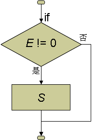
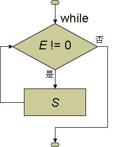
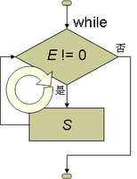
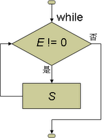
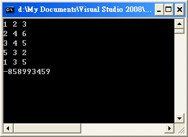
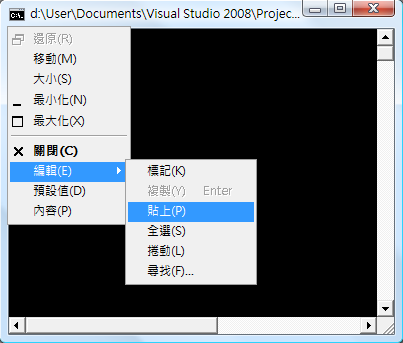
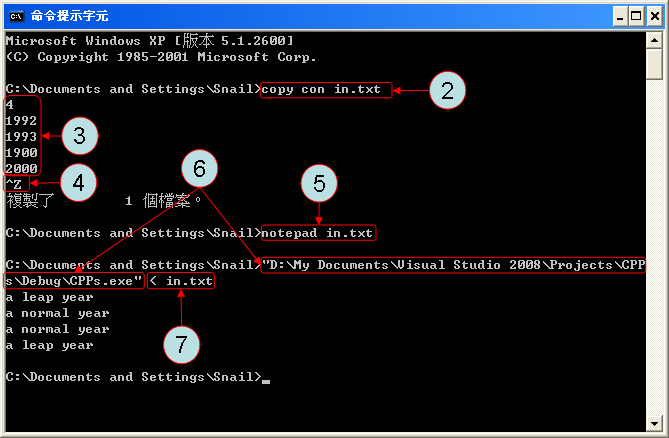
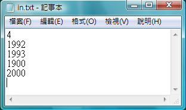
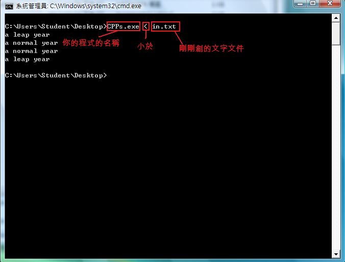
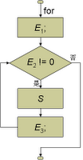

<!DOCTYPE html>
<html></html>
<head>
  <title>第四章 迴圈</title>
  <meta charset="UTF-8">
  <meta content="text/html; charset=UTF-8" http-equiv="content-type">
  <link rel="stylesheet" type="text/css" href="style.css">
  <link rel="stylesheet" href="https://maxcdn.bootstrapcdn.com/bootstrap/3.3.7/css/bootstrap.min.css">
  <script src="https://ajax.googleapis.com/ajax/libs/jquery/3.2.0/jquery.min.js"></script>
  <script src="https://maxcdn.bootstrapcdn.com/bootstrap/3.3.7/js/bootstrap.min.js"></script>
  <link href="style.css" rel="stylesheet" type="text/css">
</head>
<body>
  <nav class="navbar navbar-default" role="navigation">
    <div class="container-fluid">
      <div class="navbar-header"><a class="navbar-brand" href="#">板中資訊社</a></div>
      <div>
        <ul class="nav navbar-nav">
          <li class="active"><a href="#">C++</a></li>
          <li class="dropdown"><a class="dropdown-toggle" href="#" data-toggle="dropdown">語法<b class="caret"></b></a>
            <ul class="dropdown-menu">
              <li><a href="ch01.html">第一章 立刻動手</a></li>
              <li><a href="ch02.html">第二章 變數與指定運算子「=」</a></li>
              <li><a href="ch03.html">第三章 比較運算子與 if 陳述式</a></li>
              <li><a href="ch04.html">第四章 迴圈</a></li>
              <li><a href="ch05.html">第五章 基礎資料型別</a></li>
              <li><a href="ch06.html">第六章 字元與字串</a></li>
              <li><a href="ch07.html">第七章 陣列</a></li>
              <li><a href="ch08.html">第八章 自定義函數與資料型別</a></li>
              <li><a href="ch09.html">第九章 排序</a></li>
            </ul>
          </li>
        </ul>
      </div>
    </div>
  </nav>
  <h1>第四章 迴圈</h1>
  <h2>4.1 while 迴圈</h2>
  <h3>while 迴圈</h3>
  <p>下面是我們用 if 陳述式來解「<a href="https://zerojudge.tw/ShowProblem?problemid=d068">d068. 該減肥了</a>！」這一題的程式碼：</p>
  <script src="https://gist.github.com/allem40306/d07dc7ddb88641b56228852a7104640a.js?file=ch04-01.cpp"></script>
  <p>當所輸入的 w 大於 50，w 的值便會減 1，但是如果 w <= 50，便會維持原狀。</p>
  <p>同樣這個程式，如果我們只改一個字，就是把關鍵字 if 改成 while，其他都維持不變，如下：</p>
  <script src="https://gist.github.com/allem40306/d07dc7ddb88641b56228852a7104640a.js?file=ch04-02.cpp"></script>
  <p>執行這個程式，輸入 60，執行結果卻輸岀 50。</p>
  <p>while 在語法上和 if 極其相似，差別只在於 while 沒有 else 這個選擇性片語。其語法如下：</p>
  <p>while ( E ) S</p>
  <p>
    和 if 陳述式不一樣的是，當 E 的回傳值不為 0 時 (true)，while 陳述式會重覆執行 S，直到 E 為 0 (false)
    為止。
  </p>
  <p>為了讓你瞭解 if 敘述和 while 敘述的差異，我們把它們執行的過程式以流程圖表示如：</p>'
  <table>
    <tr>
      <td>if 陳述式</td>        
      <td>while 陳述式</td>
    </tr>    
    <tr>
      <td></td>        
      <td></td>
    </tr>
  </table>
  <p>
    在 if 陳述式的流程圖中，S 執行過後，會往下執行 if 陳述式的下一個陳述式。但是在 while 陳述式的流程圖中，S
    執行過後，卻會回到上面重新求 E 的回傳值以決定要不要再執行一次。由於這個回頭的動作，讓流程圖中的執行路徑產生了一個迴路 (如下圖)，因此像
    while 陳述式這種可以讓程式重覆執行的結構我們稱之為「迴圈 (Loop)」。迴圈會一直重覆地執行 S，直到 E 的回傳值變 0 為止。
  </p>
  <p>
    由於 while 和 if 在語法上相似的特性，我們可以直接以 while 來取代 if
    而不會產生任何的語法錯誤。但是他們的執行結果卻差很多，用 if 指令只減了 1 公斤，可是用 while 卻可以重覆地減 1 公斤，直到 w
    不再大於 50 為止。
  </p>
  <li><a href="https://zerojudge.tw/ShowProblem?problemid=d498">d498. 我不說髒話</a></li>
  <p>
    題意很單純，就是要我們輸出 n 次「I don't say swear words!」，我們可以用 while 迴圈，並直接用 n
    來記錄還剩幾次：
  </p>
  <script src="https://gist.github.com/allem40306/d07dc7ddb88641b56228852a7104640a.js?file=ch04-03.cpp"></script>
  <p>這樣程式就會不斷地輸出「I don't say swear words!」，直到 n (剩下的次數) 等於 0 為止。</p>
  <h3>換行字元</h3>
  <p>
    如果你把上面的程式上傳，你會得到 NA，10 個測試點只有一個測試點通過，其它的都是 WA。原因是題目要求每個「I don't say
    swear words!」都要單獨在一行，因此輸出一次之後就要換行。但是我們要如何在螢幕上換行呢？查一下附錄 E 的 ASCII
    字碼表，有一個編號為 10 的字碼代表「new
    line」，意思就是「換行」，你只要輸出這個字元，游標就會跑到下一行的開頭，接下來的文字就會輸出在這裡了。問題是這個字元要如何打在字串裡呢？C+
    + 為了方便某些特殊字碼的輸入，定義了一些「逸出順序」(附錄
    F)。所謂「逸出順序」，是以一個特殊字元作為記號，其後的字元就被賦予特別的作用，而不再是它原本的意義了。C++
    用倒斜線「\」(backslash) 來作為「逸出字元」，當編譯器看到了「\」時，便會根據附錄 F 的表格來詮釋其後的字元。例如 "n"
    就是一個小寫字母 n，但是 "\n" 就代表一個換行字元了。要注意是，雖然 "\n"
    在程式碼中是兩個字元，可是存在記憶體中時只有一個「換行」字元。
  </p>
  <p>因此，上面的程式只要在所要輸出的字串尾端加上一個 \n，那麼每個字串輸出完畢之後就會自動換到下一行了：</p>
  <script src="https://gist.github.com/allem40306/d07dc7ddb88641b56228852a7104640a.js?file=ch04-04.cpp"></script>
  <p>改完之後上傳之後就可以 AC 了。</p>
  <p>
    和 if 陳述式一樣，在 while ( ) 後面也只能接一個陳述式。如果你要重覆執行的陳述式有兩個或兩個以上，可以用 { }
    把這些陳述式包裝起來，變成一個「複合陳述式」。在上面的程式中，需要重複執行的陳述式有「cout << "I don't say
    swear words!";」及「n -=
    1;」兩個，所以必須在這兩個陳述式的前後加上一對大括號。如果忘了這對大括號，後果就很有趣了。請把下面這個程式貼到 VC++ 裡並執行：
  </p>
  <script src="https://gist.github.com/allem40306/d07dc7ddb88641b56228852a7104640a.js?file=ch04-05.cpp"></script>
  <p>
    隨便輸入一個正整數，比如說 5，然後你會發現程式一直不斷地輸出「I don't say swear
    wrods!」，永遠停不下來。這時候可以按(全部停止) 讓它停下來。
  </p>
  <p>
    回到程式，請在「」這行上按滑鼠右鍵、選「執行至游標處」，然後用「不進入函式」來逐行執行，你會發現程式一直在「while (n >
    0)」「cout << "I don't say swear
    words!";」這兩個陳述式跳來跳去，也就是說，由於少了一對大括號，所以 while 陳述式並不包含「n -= 1;」這個陳述式，以至於 n
    的值沒有被遞減，永遠都不會變成 0，而迴圈也一直重覆地輸出相同地文字，永遠都跳不出來！如果你把這個程式傳上去，會得到以下的訊息：
  </p>
  <table>
    <p>OLE (SIGXFSZ)<br>輸出檔大小超過系統上限 (SIGXFSZ)(25)!! <br>* 您可能產生了一個無限迴圈並產生一個失控的巨大檔案。sh: line 1: 14115 檔案大小超過上限</p>
    <p></p>
  </table>
  <h3>遞增與遞減運算子</h3>
  <p>
    利用遞增與遞減運算子，這個程式還可以改得更簡潔一些。在 2.4
    我們介紹過「複合指定運算子」，它們是一般運算字與指定運算子的結合，用來簡化「累算」的動作。然而，在所有的「累算」中，加 1 與減 1
    算是最常用的了，所以 C++ 又專為這它們設計了兩個專用的運算子，分別是「遞增運算子」 ++ 與
    「遞減運算子」--。他們都是一元運算子，用來將一個變數加 1 或減 1。它們的用法又分「前置」(Prefix) 與「後置」(Postfix)
    兩種，它們的用法如下表：
  </p>
  <table>
    <tr></tr>
    <tr>
      <td>指定及算術運算子</td>        
      <td>複合指定運算子</td>        
      <td>前置遞增(減)</td>        
      <td>後置遞增(減)</td>
    </tr>        
    <td>n = n + 1;</td>        
    <td>n += 1;</td>        
    <td>++n</td>        
    <td>n++</td>
        
        
            
    <td>n = n - 1;</td>        
    <td>n -= 1;</td>        
    <td>--n</td>        
    <td>n--</td>
  </table>
  <p>上面四欄雖然用了不同的運算子，但是它們的結果是一樣的。因此，我們可以用 n--; 來取代 n -= 1;。</p>
  <script src="https://gist.github.com/allem40306/d07dc7ddb88641b56228852a7104640a.js?file=ch04-06.cpp"></script> 
  <p>
    對上面的程式來說，前置 (--n) 的用法和後置 (n--) 的用法結果是相同的。不過當一個運算式中有 ++ 和 --
    運算子和其它運算子混用時，「前置」和「後置」兩種用法所產生的效果就不一樣了。「前置」的用法會在運算式開始求值之前就先加 1 或減
    1，而「後置」的用法則會等求值完成後才把運算元加 1 或減 1。因此，當 ++ 和 -- 與其他的運算子 (含指定運算子)
    一起混用時，「前置」和「後置」的效果是不一樣的。下面的表格比較前置用法和後置用法的異同：
  </p>
  <p>
    <table>
      <tr>
        <td></td>
        <td>前置遞增</td>
        <td>後置遞增</td>
      </tr>    
      <tr>
        <td>原始運算式</td>        
        <td>a = 5;<br>++a;<br>b = a * 7 + 1;</td>        
        <td>a = 5;<br>b = a * 7 + 1;<br>a++;</td>
      </tr>    
      <tr>
        <td>遞增運算式</td>        
        <td>a = 5;<br>b = ++a * 7 + 1;</td>        
        <td>a = 5;<br>b = a++ * 7 + 1;</td>
      </tr>    
      <tr>
        <td>結果</td>        
        <td>a == 6<br>b == 43</td>        
        <td>a == 6<br>b == 36</td>
      </tr>
    </table>
  </p>
  <p>
    參考上表，不管是前置遞增或是後置遞增，我們都會對變數 a 做一次 ++ 的運算，所以最後 a 的值都是從 5 變成了 6。可是對變數 b
    來說，前置運算會以改變後的 a (也就是 6) 來求值，求出來的 b 會等於 43，但是後置運算卻是以改變前的 a (也就是 5)
    來求值，所求得的 b 就會等於 36 了。
  </p>
  <p>
    僅算 ++ 運算子的作用是把一個變數加 1，但是它和 + 1 卻有極大的不同。++
    是一個有「副作用」的運算子，它會改變它所作用的變數的值，但是 + 1 卻不會。思考以下的例子：
  </p>
  <p>
    <table>
      <tr>
        <td></td>
        <td>遞增運算子</td>
        <td>算術運算子</td>
      </tr>    
      <tr>
        <td></td>
        <td>a = 5;<br>b = ++a;</td>
        <td>a = 5;<br>b = a + 1;</td>
      </tr>    
      <tr>
        <td>結果</td>
        <td>a == 6<br>b == 6</td>
        <td>a == 5<br>b == 6</td>
      </tr>
    </table>
  </p>
  <p>
    兩種方式執行完後 b 的值都是 6，但是用 ++ 運算子會改變 a 的值，但是算術運算子卻不會改變 a
    的值，因為算術運算子沒有任何的「副作用」。
  </p> 
  <p>參考「<a href="https://zerojudge.tw/ShowProblem?problemid=d498">d498. 我不說髒話</a>」這個程式中的這個迴圈：</p>
  <p>
    <script src="https://gist.github.com/allem40306/d07dc7ddb88641b56228852a7104640a.js?file=ch04-07.cpp"></script>
  </p>
  <p>我們可以把 -- 運算子和 (n > 0) 這個判斷式結合在一起以簡化程式，簡化以後但是我們要用前置還是後置呢？我們先試一下前置：</p>
  <script src="https://gist.github.com/allem40306/d07dc7ddb88641b56228852a7104640a.js?file=ch04-08.cpp"></script>這時候在 while 迴圈內部就只剩一個陳述式了，這時候大括號也可以省略了。
  <p></p>
  <script src="https://gist.github.com/allem40306/d07dc7ddb88641b56228852a7104640a.js?file=ch04-09.cpp"></script>
  執行這個程式，輸入 1，它卻什麼也沒有輸出。仔細看一下這個程式，當 n 等於 1 時，(--n > 0) 會先把 n 減 1
  再判斷它是否大於 0。由於 n 減 1 之後就變成 0 了，也就不再大於
  0，因此迴圈就立刻跳出來了，連一次也沒有執行到。所以我們知道，這個程式如果用前置式，它會先減再判斷，導致迴圈執行次數少了一次。因此，它必須改成後
  置式的，也就是：
  <p>
    <script src="https://gist.github.com/allem40306/d07dc7ddb88641b56228852a7104640a.js?file=ch04-10.cpp"></script>
  </p>
  <p>這時候它就會先判斷完後再把 n 減 1，迴圈就不會少執行一次了。</p>
  <p>可是如果你在迴圈執行完後去觀察 n 的值的話，你會發現 n 的值竟然變成 -1 了。再仔細觀察一下 while 陳述式的流程圖：</p>
  <p>
    你有沒有發現，E 執行的次數是不是永遠會比 S 多一次呢？因為最後一次執行完 S 之後，還得再執行一次 E
    才會離開迴圈。再看看上面的程式，最後一次執行 (n-- > 0) 時，n 原本等於 0，這時候它的動作順序如下：
  </p>
  <ol>
    <li>發現 n 沒有 > 0</li>    
    <li>把 n 減 1</li>    
    <li>跳離迴圈</li>
  </ol>
  <p>在跳離迴圈之前，上面的步驟 2 已經把 n 減為 -1 了。</p>
  <p>
    另外，再仔細觀察上面 while 陳述式的流程圖，我們也可以發現在 while 陳述式的判斷式 E 的後面本來就隱含了一個 != 0
    的判斷，因此 while 陳述式的 ( ) 中的最後一個判斷如果是 != 0 的話，那麼這個判斷就是可以省略的。由於所輸入的 n
    為正整數，所以 while (n > 0) ... 和 while (n != 0) ... 的意義是相同的，因此它也可以寫成
    while (n) ...。省略了 != 0 以後的迴圈如下：
  </p>
  <script src="https://gist.github.com/allem40306/d07dc7ddb88641b56228852a7104640a.js?file=ch04-11.cpp"></script>
  <p>因此，如果要把某個陳述式 (或複合陳述式) 重複執行 n 次，只要在它的前面加上 while (n--) 就可以了。</p>
  <p>下表把幾個 while 迴圈的寫法做個比較：</p>
  <p>
    <table>
      <tr>
        <td></td>        
        <td>while (n) {<br>            S<br>            n--;<br>        }</td>        
        <td>while (--n)<br>            S</td>        
        <td>while (n--)<br>            S
          <p></p>
        </td>
      </tr>    
      <tr>
        <td>S 執行次數</td>        
        <td>n 次</td>        
        <td>n-1 次</td>        
        <td>n 次</td>
      </tr>    
      <tr>
        <td>迴圈結束後 n 的值</td>        
        <td>0</td>        
        <td>0</td>        
        <td>-1</td>
      </tr>
    </table>
    <li><a href="https://zerojudge.tw/ShowProblem?problemid=d511">d511. 小明的作業</a></li>
  </p>
  <p>題目大意：給你五組數字，每組三個整數，其中有幾組數字可以組成三角形？</p>
  <p>這題可以用如下的「暴力法」解決：</p>
  <script src="https://gist.github.com/allem40306/d07dc7ddb88641b56228852a7104640a.js?file=ch04-12.cpp"></script>
  <h3>變數的初始化</h3>
  <p>bonus 這個變數是用來記錄加幾分的。當它在</p>
  <script src="https://gist.github.com/allem40306/d07dc7ddb88641b56228852a7104640a.js?file=ch04-13.cpp"></script>
  <p>
    中宣告時，編譯器會指派一些 (4 個位元組)
    記憶體給它儲存它的值，但是編譯器並不負責把記憶體的內容清除。也就是一個變數在剛宣告好時，它的值會依程式程行時的記憶體內容而定，每次都可能不同。為
    了確保我們的計算正確，在開始計算有幾個三角形之前，一定要先用以下的指令把 bonus
    歸零，這個動作我們稱為「初始化」(Initialization)。
  </p>
  <p>
    <script src="https://gist.github.com/allem40306/d07dc7ddb88641b56228852a7104640a.js?file=ch04-14.cpp"></script>
  </p>
  <p>如果把這行程式刪掉，執行的時候會出現如下的警告：</p><br>
  <p>如果你按「繼續」繼續執行下去，會得到不可預期的結果：</p>
  <p>初始化的動作可以和變數的宣告結合，在宣告變數的時候，順便就指定它的初始值，也就是以下的兩行程式：</p>
  <script src="https://gist.github.com/allem40306/d07dc7ddb88641b56228852a7104640a.js?file=ch04-15.cpp"></script>
  <p>可以寫成：</p>
  <script src="https://gist.github.com/allem40306/d07dc7ddb88641b56228852a7104640a.js?file=ch04-16.cpp"></script>
  <h3>用迴圈簡化</h3>
  <p>可是程式中我們重覆寫了 5 份一模一樣的以下的程式碼：</p>
  <script src="https://gist.github.com/allem40306/d07dc7ddb88641b56228852a7104640a.js?file=ch04-17.cpp"></script>
  <p>我們可以用 while 迴圈來讓這個兩個陳述式重覆執行 5 次：</p>
  <script src="https://gist.github.com/allem40306/d07dc7ddb88641b56228852a7104640a.js?file=ch04-18.cpp"></script>
  <p>記得，由於要重複執行的陳述式有兩個，所以要用大括號括起來。</p>
  <p>
    <li><a href="https://zerojudge.tw/ShowProblem?problemid=d074">d074. 電腦教室</a></li>
  </p>
  <p>題目大意：給你 n 個正整數，請你求最大值。</p>
  <p>這題和「<a href="https://zerojudge.tw/ShowProblem?problemid=d065">d065. 三人行必有我師</a>」有點像，都是求最大值。但是「<a href="https://zerojudge.tw/ShowProblem?problemid=d065">d065. 三人行必有我師</a>」固定給你三個整數，「<a href="https://zerojudge.tw/ShowProblem?problemid=d074">d074. 電腦教室</a>
    」卻是先給你一個整數 n，然後再給你 n 個整數來求最大值。由於 n
    的值要到程式執行時才會給你，這個程式就不能用「暴力法」寫一大堆的程式碼來解決問題，一定要用迴圈了。還好你已經學會如何利用 while
    迴圈來讓某一段程式碼重複執行 n 次，因此這題就不難了。
  </p>
  <p></p>
  <p>
    在求最大值時，我們通常會使用一個很簡單的技巧，就是先設一個變數來記錄最大值，比如說 mx (代表
    maximum)。一開始時先把它設為一個很小的值，小到我們要處理的資料中沒有任何一個數字比它小。然後我們就把數字一個一個讀入，如果發現所讀入的值
    比 mx 大，就把這個比較大的值設定給 mx。如此一來，mx 會隨時保持到當時為止的最大值，等到所有的數字都讀完了以後，mx
    裡所存的值就是所有數字的最大值了。
  </p>
  <script src="https://gist.github.com/allem40306/d07dc7ddb88641b56228852a7104640a.js?file=ch04-198cpp"></script>
  <p>也可以用 ? : 來代替 if 陳述式：</p>
  <script src="https://gist.github.com/allem40306/d07dc7ddb88641b56228852a7104640a.js?file=ch04-20.cpp"></script>
  <p>? : 運算子的可讀性不佳，筆者比較喜歡用 max () 函式：</p>
  <script src="https://gist.github.com/allem40306/d07dc7ddb88641b56228852a7104640a.js?file=ch04-21.cpp"></script>
  <h2>4.2 n 行版</h2>
  <p>
    到目前為止，我們所做的題目都是專門為初學者所設計，「輸入只有一行」的特殊題目。但是一般在比賽時，出題者為了更徹底地測試參賽者的程式，會要求程式接
    受多筆的測試資料，並針對每筆測試資料輸出它的結果。以「文文的求婚--續集」為例，題目會要求你的程式可以輸入很多的西元年份，並判斷每個年份是閏年或
    是平年。
  </p>
  <li><a href="https://zerojudge.tw/ShowProblem?problemid=d069">d069. 文文的求婚--續集 (n 行版)</a></li>
  <p>輸入說明 ：</p>
  <p>輸入的第一行有一個整數 n。接下來的 n 行每行有一個正整數 y，代表珊珊生日的西元年份。</p>
  <p>範例輸入 ：</p>
  <p>4<br>1992<br>1993<br>1900<br>2000</p>
  <p>
    之前的題目都有很多個「測資點」，意思是它會把你上傳的程式執行很多次，每次都輸入不一樣的值，以驗證你的程式是否正確。但是這個題目卻只有 1
    個測資點，也就是它只執行你的程式一次，但是這一次就會輸入很多筆的「測試資料」，你的程式必須一一將這些資料讀入，逐一算出答案並輸出。
  </p>
  <p>
    程式上傳以後，系統用來驗證你的程式碼的測試資料會比公布在題目中的範例輸入要更多且更嚴苛。以這題來說，題目的範例輸入只有 4
    筆資料，然而實際上在驗證時，卻輸入了 380 筆資料。所以有很多時候，儘管你輸入題目上的範例測資可以得到正確的結果，但是上傳之後卻不一定能夠
    AC。
  </p>
  <p>
    既然你已經學了迴圈的結構，應該可以用它來讓程式重覆地輸入西元年份並判斷該年是閏年或是平年。問題是會有幾筆測試資料？迴圈倒底要執行幾次？程式如何知
    道測試資料已經結束？
  </p>
  <p>
    在範例輸入中，第一行的 4 代表這題有 4 筆測試資料，接下來的 4 個整數才是你要判斷閏平年的西元年份。就像「d074.
    電腦教室」的程式一樣，我們也可以先把 4 輸入到變數 n 裡，然後再利用 while 迴圈，讓迴圈裡的程式執行 n
    次。至於迴圈內用以輸入年份並判斷閏平年的程式碼 (8~12 行) 則和「d067. 文文的求婚--續集 (1 行版)」的部份完全相同。
  </p>
  <script src="https://gist.github.com/allem40306/d07dc7ddb88641b56228852a7104640a.js?file=ch04-22.cpp"></script>
  <p>
    註:y % 4 == 0 && y %100 != 0 || y % 400 == 0可改成(y % 4 == 0)-(y
    %100 == 0)+(y % 400 == 0)
  </p>
  <p>
    執行程式時，如果你懶得逐一輸入題目上的範例輸入，你可以把它複製下來，再貼到程式執行的畫面。只是因為它是 DOS 的畫面，貼的時候不能用鍵盤的
    Ctrl-V，而是要按視窗的左上角的圖示，然後選「編輯 /
    貼上」，但是要記得在程式的尾端加上中斷點，以免程式執行完畢後螢幕直接關閉而看不到結果。
  </p>
  <p>它的執行結果如下：</p>
  <p>4<br>1992<br>a leap year<br>1993<br>a normal year<br>1900<br>a normal year<br>2000<br>a leap year</p>
  <p>如果你沒有看到最後一行的「a leap year」，可能是因為你複製時沒有複製到最後一個換行，只要在鍵盤上補按一個「Enter」鍵即可。</p>
  <p>
    你很可能會發現，這樣的結果和題目上所要求的結果不一樣：題目上的輸入資料和輸出資料是分開的，可是我們這個程式的輸入資料和輸出資料卻是交錯的，這個程
    式上傳以後會 AC 嗎？
  </p>
  <p>
    其實你不用太擔心。你應該猜得到，當你上傳一個程式到線上裁判時，線上裁判那端並不會有一個人坐在電腦前面幫你執行並用鍵盤輸入測試資料－－這些動作是由
    電腦自動完成的。但是電腦如何幫你輸入測試資料呢？開外掛嗎？當然不是，它是用輸出入重導向的方式來完成的。
  </p>
  <p></p>
  <p>
    事實上，出題者把要輸入的資料存在一個檔案中並上傳到 Zerojudge，Zerojudge 在執行你的程式時再把它「導入」你的程式中作為
    cin 的輸入。我們現在就來模擬這樣的過程。
  </p>
  <p>WINDOWS XP:</p>
  <ol>
    <li>打開「命令提示字元」。</li>    
    <li>輸入以下指令並按 Enter。</li>    
    <li>copy con in.txt</li>    
    <li>用剛才所教的方法把題目的「範例輸入」內容貼上。貼上後如果游標沒有換到下一行，則補按一個 Enter。</li>    
    <li>在鍵盤上按 Ctrl-Z 及 Enter。</li>    
    <li>
      這時候你已經在這個位置準備好了一個「輸入檔」，檔名是「in.txt」如果你要驗證這個檔案，可以輸入「notepad
      in.txt」來查看，看完後關閉記事本並回到「命令提示字元」視窗。
    </li>    
    <li>
      打開「<專案目錄> / Debug」資料夾，在裡面找到一個 .exe
      檔，把它用滑鼠拖到「命令提示字元」視窗裡，它會在「命令提示字元」加上程式的路徑名稱。
    </li>    
    <li>在名稱的後面加上「< in.txt」並按 Enter。</li>    
  </ol>
  <p>WINDOWS VISTA or 7:</p>
  <p>
    <ol>
      <li>先在桌面建立一個文字文件，把「範例輸入」放進那個文件檔裡。</li>        
      <li>打開你專案的資料夾，debug裡有一個exe檔，那就是你寫的程式，把它複製到桌面。</li>    
      <li>在桌面「shift+右鍵」點「在此處開啟命令視窗」。</li>    
      <li>輸入以下指令並按下 Enter。</li>
    </ol>
  </p>
  <p>
    這時候程式會用 in.txt 檔案的內容來作為 cin
    的輸入，畫面上看不到這些輸入的內容，但是卻可以看到輸出的內容和題目的範例輸出一模一樣了。因此每當你寫完一個程式以後，用鍵盤來驗證你的程式的正確性
    時，不用擔心輸入的字元會干擾輸出的正確性，因為 Zerojudge 會把輸入與輸出分開來處理的。
  </p>
  <p>正式上路了</p>
  <p>
    學會了用迴圈來重複地讀入並處理測試資料以後，我們就可以來試試幾題「真正」的比賽的題目了。下面三個題目不是筆者為了讓你練習而加到
    Zerojudge 的「教學題」，而是真正曾經出現在比賽裡的題目。這幾題的測試資料都是用「n 行版」的形式給的。
  </p>
  <li><a href="http://contest.cc.ntu.edu.tw/npsc2006/2006sen.doc">2006 NPSC 高中組初賽 B. 幼稚國王去旅行</a></li>
  <p>題目大意：不管有幾個人，永遠都是第一個人做總理，所以輸出 1。</p>
  <p>這題比較特別的地方是，它的輸出和輸入是沒有關係的，所以除了第一行的 k 以外，接下來的數字不去讀它也沒有關係。</p>
  <li><a href="https://zerojudge.tw/ShowProblem?problemid=d039">d039. 11044 - Searching for Nessy </a></li>
  <p>題目大意：每個聲納可以涵蓋它本身及其週圍一共九個格子，給你一個 n×m 的矩陣，求出需要幾個聲納才能涵蓋不含邊緣的所有區域。</p>
  <p>
    你只要把長寬各除以
    3，就可以得到長寬各需要幾個聲納，相乘就可以得到結果。由於可以不用涵蓋邊緣，所以所得的商要無條件捨去，用整數的除法剛好可以達到這個效果。要注意的
    是一定要先除再乘，要善用括號。每輸出一個結果之後，要再輸出一個換行 "\n"。
  </p>
  <li><a href="https://zerojudge.tw/ShowProblem?problemid=d143">d143. Q11172: Relational Operators </a></li>
  <p>題目大意：比較兩個數字的關係，相等輸出 =，左大右小輸出 >，左小右大輸出 <。</p>
  <p>題目很簡單，記得要輸出換行。</p>
  <li><a href="https://zerojudge.tw/ShowProblem?problemid=c004">c004. Beat the Spread! </a></li>
  <p>題目大意：給你兩個非負整數的和與差，求這兩個非負整數，大的在前，如果無解輸出「impossible」。</p>
  <p>簡單的數學題。記得有可能其中一隊或兩隊都得 0 分哦！</p>
  <h2>4.3 eof 版</h2>
  <li><a href="https://zerojudge.tw/ShowProblem?problemid=d071">d071. 文文的求婚--續集 (EOF 版)</a></li>
  <p>
    並不是所有的題目都會在輸入資料一開始的時候就告訴你一共有幾筆的測試資料。可是如果它不告訴我們有幾筆資料，那我們的程式要如何知道迴圈倒底要執行幾次
    呢？還記得上一節我們提到，線上裁判通常都是將 cin 重導向到檔案來取代鍵盤輸入。因此像這樣的問題，我們可以一直讀到檔案結束 (EOF,
    End of File) 為止。
  </p>
  <h3>cin.eof()</h3>
  <p>
    問題是我們要如何知道檔案已經結束了呢？cin 有一個「成員函式」叫 eof()，它可以用來判斷檔案是否已經結束。在 C++
    的語法中，要使用某「物件」的「成員函式」時，只要在「物件」和「成員函式」之間加一個點就行了，例如：cin.eof()。當檔案遇到檔尾時，
    cin.eof() 會回傳 1，否則會回傳 0。我們可以利用這個函數來完成這個程式如下：
  </p>
  <script src="https://gist.github.com/allem40306/d07dc7ddb88641b56228852a7104640a.js?file=ch04-23.cpp"></script>
  <p>
    打好這個程式，準備要執行時，突然有一個問題：線上裁判是用檔案做輸入的，所以會有檔尾，可是在 VC++
    上執行時，我們是用鍵盤輸入的，鍵盤有檔尾嗎？
  </p>
  <p>
    鍵盤原本是沒有檔尾的，但有了重導向的功能以後，系統也為鍵盤提供了模擬「檔尾」的功能。在 Windows 的系統中，換行以後的第一個字元如果是
    Ctrl-Z，就會被視為是檔尾。(但是在 Unix 及 Linux 中則是用 Ctrl-D 哦！)
  </p>
  <p>現在我們開始測試這個程式：</p>
  <ol>
    <li>在最後一個大括號之前加上一個「中斷點」。</li>    
    <li>按</li>    
    <li>複製題目上的範例輸入。</li>    
    <li>在執行程式的視窗上選「編輯 / 貼上」。如果沒有換到下一行的話在鍵盤卡補按一個「Enter」</li>    
    <li>按 Ctrl-Z，Enter。</li>
  </ol>
  <p>這時候程式會結束，停在最後的中斷點，它的畫面如下：</p>
  <p>1992<br>a leap year<br>1993<br>a normal year<br>1900<br>a normal year<br>2000   ←必要時補一個 Enter<br>a leap year<br>^Z<br>a leap year  ←多輸出了這一行</p>
  <p>
    我們發現程式的確在遇到檔尾時跳出迴圈了，不過，在 ^Z (按 Ctrl-Z 時畫面會出現 ^Z) 的下面卻又多出了一行「a leap
    year」。如果你把這個程式上傳，你會得到 OLE (Output Limit Exceeded, 超出輸出限制) 以及下面的說明：
  </p>
  <p>您的輸出超過測資的輸出!!(line:381)<br>您額外輸出了: a leap year<br>可能的原因為<br>* 累贅的輸出，請勿輸出題目未要求的文字</p>
  <p>這題的輸入測試檔中含有 380 筆測試資料，正確的輸出也應該只有 380 行，但是你的程式卻輸出了 381 行。為什麼會這樣呢？</p>
  <p>以題目的範例輸入檔案為例：</p>
  <table>
    <tr>
      <td>1</td>
      <td>9</td>
      <td>9</td>
      <td>2</td>
      <td>\n</td>
      <td>1</td>
      <td>9</td>
      <td>9</td>
      <td>3</td>
      <td>\n</td>
      <td>1</td>
      <td>9</td>
      <td>0</td>
      <td>0</td>
      <td>\n</td>
      <td>2</td>
      <td>0</td>
      <td>0</td>
      <td>0</td>
      <td>\n</td>
      <td>檔尾</td>
    </tr>    
    <tr>
      <td> </td>
      <td> </td>
      <td> </td>
      <td> </td>
      <td></td>
      <td> </td>
      <td> </td>
      <td> </td>
      <td> </td>
      <td> </td>
      <td> </td>
      <td> </td>
      <td> </td>
      <td> </td>
      <td> </td>
      <td> </td>
      <td> </td>
      <td> </td>
      <td> </td>
      <td>⇧</td>
      <td> </td>
    </tr>
  </table>
  <p>
    當我們的迴圈執行完第四次之後，會回頭以 cin.eof() 來判斷是否到了檔尾，可是在讀完了第四次的 y，也就是 2000
    之後，檔案的指標是停留在 2000 之後的那個換行字元，還沒有真正到達檔尾，這時候 cin.eof() 仍然會回傳
    0，導致迴圈會再執行第五次，這次的 cin >> y; 就真的碰到檔尾了，但是由於沒有資料給它讀，這次的讀取是失敗的，y
    的值不會被改變，仍然保持原來的 2000，接下來的 if 判斷就會為它多輸出一次「a leap year」。
  </p>
  <h3>break</h3>
  <p>
    C++ 有一個 break 指令，用以跳出當時所在的迴圈。我們可以在發現到讀不到資料時，立刻以 break
    跳出迴圈，不要讓它執行迴圈中剩下的陳述式。
  </p>
  <script src="https://gist.github.com/allem40306/d07dc7ddb88641b56228852a7104640a.js?file=ch04-24.cpp"></script>
  <p>while (1) ... 代表要一直重覆地執行這個迴圈，跳出迴圈的判斷則交給迴圈中的 if 陳述式來完成。</p>
  <p>上面的程式上傳是可以 AC 的，但是我們還要再研究一個很有趣的現象。</p>
  <p>觀察以下的程式片段：</p>
  <p>
    <script src="https://gist.github.com/allem40306/d07dc7ddb88641b56228852a7104640a.js?file=ch04-25.cpp"></script>
  </p>
  <p>
    cin 是我們的輸入物件，在 C++ 中可以把它轉成 bool 的型態。有關 bool 型態及型態轉換，在後面的章節會再詳述，現在你只要知道
    bool 型態就是邏輯上的「真」(true) 與「假」(false)，在 C++ 中我們常用 1 來代表真，用 0 來代表假。而 bool
    (cin) 就是要把 cin 這個物件轉為 1 (true) 或 0 (false)。至於什麼時候會轉成 1，什麼時候會轉成
    0？我們把上面的程式片段加上「殼」以後執行，第一行隨便輸入一個整數 (如 1992)，第二行輸入 Ctrl-Z，我們會得到以下的執行結果：
  </p>
  <p>1<br>1992<br>1<br>^Z<br>0<br></p>
  <p>
    從程式的輸出結果中我們可以看出，前兩次的 bool (cin) 都得到了 1，但是由於第二個 cin >> x;
    的讀取動作遇到了檔尾 (Ctrl-Z)，沒有讀成功，接下來的 bool (cin) 就轉成 0 了。由此可知，我們可以用 bool (cin)
    來得知前一次的讀取是否成功。那麼之前的程式就可以改成：
  </p>
  <script src="https://gist.github.com/allem40306/d07dc7ddb88641b56228852a7104640a.js?file=ch04-26.cpp"></script>
  <p>由於放在 if 或 while 後面的 ( ) 內的運算式最後都是會轉成 bool，所以 bool 的型態轉換就可以省下來了，因此</p>
  <script src="https://gist.github.com/allem40306/d07dc7ddb88641b56228852a7104640a.js?file=ch04-27.cpp"></script>
  <p>可以寫成</p>
  <script src="https://gist.github.com/allem40306/d07dc7ddb88641b56228852a7104640a.js?file=ch04-28.cpp"></script>
  <p>
    還記得 cin >> y 的回傳值就是 cin 嗎？因此，我們也可以直接把 cin >> y 直接代入 if
    陳述式之中了：
  </p>
  <script src="https://gist.github.com/allem40306/d07dc7ddb88641b56228852a7104640a.js?file=ch04-29.cpp"></script>
  <p>可以寫成</p>
  <script src="https://gist.github.com/allem40306/d07dc7ddb88641b56228852a7104640a.js?file=ch04-30.cpp"></script>
  <p>整個程式就變成了：</p>
  <script src="https://gist.github.com/allem40306/d07dc7ddb88641b56228852a7104640a.js?file=ch04-31.cpp"></script>
  <p>
    即然在進入迴圈後的第一個指令就是 if (!(cin >> y)) break;，我們大可以把這個判斷就放在 while 的 (
    ) 裡了。而且現在在迴圈裡的只有一個 if 陳述式，所以大括號也可以省了。以下是這題的「終極版」程式碼：
  </p>
  <script src="https://gist.github.com/allem40306/d07dc7ddb88641b56228852a7104640a.js?file=ch04-32.cpp"></script>
  <p>比較一下上面這個「eof 版」的程式和下面這個「一行版」的程式有什麼不同？</p>
  <script src="https://gist.github.com/allem40306/d07dc7ddb88641b56228852a7104640a.js?file=ch04-33.cpp"></script>
  <h3>辨識 eof 版的題目</h3>
  <p>
    在所有的測試資料輸入模式中，「EOF
    版」算是用得最多的了。有的時候題目對此也交待得不是很清楚，常常以「輸入含有多筆測資」就帶過了。因此如果輸入說明中，沒有清楚地交待一共有幾筆測試資
    料 (n 行版)，或是測試資料以特殊的結作為結束 (下一節的 0 尾版)，那麼這題就應該以「EOF 版」來處理了。學會了「EOF
    版」的處理方式之後，現在你能做的題目就多很多了。事實上，所有由 Zerojudge 的站長 Jiangsir 所出的基礎題，全部都是「EOF
    版」的。同學們，殺啊！
  </p>
  /
   
  <p>
    <li><a href="https://zerojudge.tw/ShowProblem?problemid=a00        ">a004. 文文的求婚</a></li>
  </p>
  <p>
    這題算是這一系列劇情的「首部曲」了。題目的要求和「d071. 文文的求婚--續集 (EOF
    版)」其實是一模一樣的，差別只是這題用中文的「閏年」及「平年」作為輸出。同學們，再 AC 一題吧！
  </p>
  <li><a href="https://zerojudge.tw/ShowProblem?problemid=a002">a002. 簡易加法</a></li>
  <p>題目大意：這樣的題目還要大意啊？自己看吧！超級秒殺題。</p>
  <p>
    在 while 的 ( ) 也可以輸入兩個變數，如 while (cin >> a >> b) ...，反正最後傳回的
    cin 轉成 bool 都會是 0 (false)。
  </p>
  <li><a href="https://zerojudge.tw/ShowProblem?problemid=a003">a003. 兩光法師占卜術</a></li>
  <p>這題再寫不出來，你也很兩光哦！</p>
  <p>更多「EOF 版」的題目：</p>
  <li><a href="https://zerojudge.tw/ShowProblem?problemid=d053">d053 10970 - Big Chocolate</a></li>
  <p>題目大意：給你一塊長寬為 m 與 n 的巧克力，至少要切幾刀才能把它切成 m×n 塊。</p>
  <p>
    根據題意，你不可以把好幾塊併在一起或疊在一起切，一次只能切一塊。那麼這題就和「d461. 班際籃球賽」很像了，每切一刀就會多一塊，那麼要切成
    n 塊就得切 n - 1 刀了。
  </p>
  <li><a href="https://zerojudge.tw/ShowProblem?problemid=d126">d126. 一、牧场围栏</a></li>
  <p>
    這題是大陸的題目，所以是簡體字。有兩個原因讓 Zerojudge 也很受大陸同胞的歡迎。首先，它提供用 Pascal
    語言解題。在大陸的中學生當中，Pascal 是很受歡迎的電腦語言。再者，這個網站提供了簡繁轉換的功能。台灣同胞要看大陸的題目，只要在「内容
    ：」右邊的「简体->正體 」上點兩次，它就會變成繁體的了。
  </p>
  <p>題目大意：給你矩形的長寬，求周長。</p>
</body>
<h2>4.4 0 尾版
  <li><a href="https://zerojudge.tw/ShowProblem?problemid=d070">d070. 文文的求婚--續集 (0 尾版)</a></li>
  <p>
    講完了「n 行版」和「EOF  版」，現在我們來看看第三種給測資的方式——「0 尾版」。這題的題目內容「
    文文的求婚--續集」系列一模一樣，差別只在於給資料的方式。「n 行版」是一開始就告訴你底下會有多少筆的資料，「EOF
    版」則是跟本不告訴你有幾筆資料，你自己讀到沒有資料為止。而在處理「0 尾版」的題目感覺上像「EOF 版」，只是它不是以 eof
    作為結束，而是在資料的最後加上一筆不可能的資料來作為結束的記號。以這題的範例輸入來說，前四行是你要處理的資料，而最後一行的 0
    則是結束的記號。這個結束的記號必須是不可能出現在測試資料之中的，以免造成混淆。題目中已經說明西元年份 y 為一個「正整數」，所以可以用 0
    來做為資料的結束。
  </p>
  <p>我們直接用「EOF 版」的程式加上一個 if ... break; 述敘就可以 AC 這題了：</p>
  <script src="https://gist.github.com/allem40306/d07dc7ddb88641b56228852a7104640a.js?file=ch04-34.cpp"></script>
  <3>, 運算子</3>
  <p>
    C++ 至少定義了 44
    個運算子，各式各樣、琳琅滿目，在各主要的程式語言之中，算是最多的了。其中有很多運算子的功能有點奇怪，初學者很難看出它倒底是要做什麼的，逗號運算子
    就是其中的一個。
  </p>
  <p>
    依 C++
    的定義，逗號運算子像大多數其它的運算子一樣，也是一個二元運算子，在它的前後各有一個運算元。它會先對其左側的運算元求值，然後將回傳值捨棄，接下來再
    對其右側的運算元求值，並以右側運算元的回傳值作為逗號運算子的回傳值。以下面這個陳述式為例：
  </p>
  <p>    a = (1 + 2, 4 * 5);</p>
  <p>
    程式會先求出 1 + 2 的結果為 3，然後把 3 丟棄，接下來再求 4 * 5 的結果為 20，並把這個 20 透過 = 運算子指定給變數
    a。
  </p>
  <p>既然早知它的回傳值要丟棄，那還寫它做什麼？沒錯，上面的這個陳述式其實就等於</p>
  <p>    a = 4 * 5;</p>
  <p>那逗號運算子的存在就是很多餘的一件事了不是嗎？其實不然，看看下面這個陳述式：</p>
  <p>    a = (cin >> a, a * 2);</p>
  <p>這個陳述式會先輸入 a，然後立刻將 a * 2 再回存到 a。如果輸入 3，a 就會變 6；如果輸入 7，a 就會變 14。</p>
  <p>
    重點是，逗號運算子的左側運算元一定必須是一個有「副作用」的運算式。a = (1 + 2, 4 * 5); 就等於 a = 4 * 5;，因為
    1 + 2 的運算沒有「副作用」，而它的回傳值又被捨棄了。但是 cin >> a 卻是有「副作用」的，雖然它的回傳值 cin
    被捨棄了，但是求值完後 a 的值已經變成了我們所輸入的值了。
  </p>
  <p></p>
  <p>逗號運算子常被有經驗的程式師用來讓程式碼更簡潔。參考下面的程式片段：</p>
  <p>a = 3;<br>    b = 5;</p>
  <p>t = a;<br>    a = b;<br>    b = t;</p>
  <p>
    這段程式的作用是先設定變數 a 和 b
    的值，然後把它們的值交換，(我知道，這個例子很無聊)。因為每個陳述式都很短，所以你可能會想把它們合併一下，變成：
  </p>
  <p></p>
  <p>a = 3; b = 5;<br>    t = a; a = b; b = t;</p>
  <p>
    但是這樣的程式看起來「不舒服」，因為有太多的「;」所以看起來有點支離破碎。我們可以模枋英文，用逗號把若干個「子句」連接成「複合句」，而不是一大堆
    的「簡單句」：
  </p>
  <p>a = 3, b = 5;<br>    t = a, a = b, b = t;</p>
  <p>這樣的程式碼看起來比較優雅。(什麼？還要有「連接詞」！你是英文老師派來這裡亂的嗎？)</p>
  <p>回到我們的「0 尾版」程式，while (cin >> y) 也可以用逗號運算子把下一行的 if 陳述式合併進來：</p>
  <script src="https://gist.github.com/allem40306/d07dc7ddb88641b56228852a7104640a.js?file=ch04-35.cpp"></script>
  <p>就變成了：</p>
  <script src="https://gist.github.com/allem40306/d07dc7ddb88641b56228852a7104640a.js?file=ch04-36.cpp"></script>
  <p>
    程式會先輸入 y，再根據 y 的值來判斷是否要繼續執行迴圈。while 的 ( ) 裡的 != 0 是可以省略的，而且迴圈內部也只剩一個 if
    指令了，所以大括號也可以省略。最後整個程式最後就變成了：
  </p>
  <script src="https://gist.github.com/allem40306/d07dc7ddb88641b56228852a7104640a.js?file=ch04-37.cpp"></script>
  <h3>三種版本的整理</h3>
  <p>
    當你做題目時，在看完題目準備開始寫程式的時候，第一個工作就是要看「輸入說明」及「範例輸入」來判斷它的測試資料是屬於哪一種型式。大部分的題目都是這
    三種版本其中的一種，也有一些是其中一中的「變體」，或是兩種版本的「組合」。只要你把基本的型式弄熟了，其他的變化就不是問題了。
  </p>
  <p>1. 「n 行版」：先告訴你有幾筆資料。 </p>
  <script src="https://gist.github.com/allem40306/d07dc7ddb88641b56228852a7104640a.js?file=ch04-38.cpp"></script>
  <p>2. 「eof 版」：用檔案結束 (EOF) 來表示結束。</p>
  <script src="https://gist.github.com/allem40306/d07dc7ddb88641b56228852a7104640a.js?file=ch04-39.cpp"></script>
  <p>3. 「0 尾版」：資料結尾用 0 或其他特別的值來標示。</p>
  <script src="https://gist.github.com/allem40306/d07dc7ddb88641b56228852a7104640a.js?file=ch04-40.cpp"></script>
  <p>
    這三種型式中，「eof 版」是最熱門的。對出題者來說，如果要在輸入檔中增加一筆測試資料，「n 行版」需要回去修改一開始的 n 值，但是「eof
    版」就不需要了。對答題者來說，測試「n 行版」的程式時需要在程式的最後加上中斷點，或是把一開始的 n
    值換成一個較大的值，否則程式一執行完畫面就關掉了。但是「eof 版」的程式就不需要加中斷點，你只要在看完結果後按 Ctrl-Z 和 Enter
    就可以了。
  </p>
  <p>
    「0 尾版」和「eof 版」有點相似，只要在複製範例輸入時不要複製最後的 0，等看完結果後再按 0 和 Enter 就可以了。「0
    尾版」的一個缺點是真正的測試資料中不能再有 0 存在，否則會被誤為測試資料的結束。如果測試資料中會出現 0 的話，可以改用 -1
    作為結束，如果測試資料也包含負數的話，那就只能改用「n 行版」或「eof 版」了。那是為什麼在這三種型式中，「0 尾版」是最少見的一種的原因了。
  </p>
  <li><a href="https://zerojudge.tw/ShowProblem?problemid=c006">c006. Combination Lock  </a></li>
  <li><a href="https://zerojudge.tw/ShowProblem?problemid=d057">d057. 11494 - Queen </a></li>
  <li><a href="https://zerojudge.tw/ShowProblem?problemid=b226">b226. E. 鋪地磚</a></li>
  <h2>4.5 for 迴圈</h2>
  <li><a href="https://zerojudge.tw/ShowProblem?problemid=d532">d532. 文文的求婚 (三)</a></li>
  <p>題目大意：求西元 a 年與 b 年之間一共有多少個閏年。</p>
  <p>
    我們已經知道如何去判斷閏年和平年了，我們只要想辦法用一個迴圈讓它重複執行 b - a + 1 次，迴圈中的 y 則從 a 變到
    b。在迴圈中如果發現 y 是閏年數的話，就把閏年數加 1，迴圈結束後我們就可以知道一共有幾個閏年了。
  </p>
  <script src="https://gist.github.com/allem40306/d07dc7ddb88641b56228852a7104640a.js?file=ch04-41.cpp"></script>
  <p>上面這個程式是可以 AC 的。不過，在 C++ 有另外一個 for 陳述式可以用來簡化這樣的迴圈。for 陳述式的語法如下：</p>
  <p></p>
  <p>for ( E1 ; E2 ; E3 ) S<br>    E1: 初始部<br>    E2: 條件部<br>    E3: 更新部<br></p>
  <p>其流程圖如下：</p>
  <p>上面的 for 陳述式也可以用下面的 while 陳述式來完成，其作用是一樣的：</p>
  <p>E1;<br>    while ( E2 ) {<br>        S<br>        E3;<br>    }<br></p>
  <p>
    一個迴圈的形成，一般來說有三個重要部份。在進入迴圈之前，我們要先設定它的初始狀態，這個部份我們稱為「初始部」(Initialization)，也
    就是語法裡的 E1。以上面的程式為例，在迴圈開始之前，我們要先把 y 設為
    a，這就是初始部。每執行完一次迴圈中的動作，我們需要更新控制變數，讓它準備好進行下一個回合，這個部份我們稱為「更新部」(Update)，上面的程
    式中，每次在判斷完 y 是不是閏年後，我們就把 y 加
    1，準備好去做下一個判斷，這就是更新部。你也需要為迴圈設定一個條件，用以判斷迴圈是否繼續，這就是「條件部」(Condition)，範例程式中
    的 y 如果仍小於或等於 b 時，我們就繼續判斷 y 是否閏年，一旦 y 大於 b 時，迴圈就會跳出來了，這就是條件部。
  </p>
  <p>
    用 while 陳述式來做迴圈時，這三個部份會分散在三個地方，一來程式較為冗長，而且閱讀起來較為吃力。for
    陳述式把控制迴圈的這三個部份集中在一起，讓程式看起來較為簡潔，也比較容易閱讀。上面範例程式的迴圈部份：
  </p>
  <script src="https://gist.github.com/allem40306/d07dc7ddb88641b56228852a7104640a.js?file=ch04-42.cpp"></script>
  <p>以 for 陳述式來改寫如下：</p>
  <p>
    <script src="https://gist.github.com/allem40306/d07dc7ddb88641b56228852a7104640a.js?file=ch04-43.cpp"></script>
  </p>
  <p>
    在這個迴圈中，y 的角色稱為「控制變數」(Control Variable)，程式中利用它的變化來控制迴圈執行的次數。for
    迴圈可以把這些迴圈控制的動作完全集中在 for 後面的 ( ) 中，只要看完 for (y = a; y <= b; y++)
    這一行，你就可以知道迴圈一共會執行 b-a+1 次，迴圈中的 y 會從 a 開始依次遞增到 b。
  </p>
  <p>使用 for 陳述式時要注意，在 ( ) 中是用兩個分號來隔開三個「運算式」E1, E2 及 E3。</p>
  <li><a href="https://zerojudge.tw/ShowProblem?problemid=d072">d072. 文文的求婚--續集 (Case 版)</a></li>
  <p>
    這題的測試資料型式其實是「n 行版」，你可以發現它的輸入資料和「n 行版」完全相同，只是輸出變得比較麻煩，在「a leap year」及「a
    normal year」之前，我們得先輸出這是第幾筆測試資料。即然輸入旳部份與「n 行版」完全相同，你可能會認為直接用之前的「n
    行版」的程式改一下輸出就好了。這題需要輸出這是第幾筆測試資料，這個數字從 1 開始，由小到大，可是 n
    的變化卻是由大到小，所以...(敬請期待)
  </p>
  <li><a href="https://zerojudge.tw/ShowProblem?problemid=b146">b146. NOIP2004 1.不高兴的津津</a></li>
  <p>題目大意：給你 7 組數字，每組兩個整數，求第幾組的和最大，但是若最大的和不大於 8 則輸出 0，若有好幾組並列最大，輸出最小的組別。</p>
  <p>這題你可以用以下的「暴力法」來解題：</p>
  <script src="https://gist.github.com/allem40306/d07dc7ddb88641b56228852a7104640a.js?file=ch04-44.cpp"></script>
  <p>
    還記得「d511. 小明的作業」這題嗎？那個程式的「暴力解」有五段一模一樣的程式碼，我們用 while
    陳述式將其中的一段程式碼重複執行五次，其他四段就可以刪掉了。可是如果你仔細看，上面的程式雖然有 7
    段幾乎一模一樣的程式碼，但是每一段卻仍有一個陳述式不太一樣
    (紅色部份)，這樣我們還能用迴圈來簡化這個程式嗎？答案當然是肯定的，只是我們需要另外設一個變數，讓它在迴圈執行的過程中，它的值會從 1
    依次遞增到 7，然後再用它來取代程式中紅色的部份就行了。你當然也是可以用 while 陳述式來完成這個工作，但是即然學了 for
    陳述式，就要善用它為我們所帶來的便利。
  </p>
  <script src="https://gist.github.com/allem40306/d07dc7ddb88641b56228852a7104640a.js?file=ch04-45.cpp"></script>
  <p>
    程式中的變數 i 除了用來取代原來的 1 到 7 的值以外，也用來作為迴圈的控制變數，一舉兩得。變數 mx (maximum)
    用以儲存最大的上課時數，所用的技巧和「d074. 電腦教室」求最大班級人數的方法是一樣的。但是我們一開始的時候把 mx 設為
    8，那麼如果沒有任何一天的上課時數大於 8 時，變數 mxi 的值就會維持最初設定的 0 了。
  </p>
  <h2>4.6 巢狀迴圈</h2>
  <li><a href="http://contest.cc.ntu.edu.tw/npsc2006/2006junfinal.doc">2006 NPSC 國中組決賽 D. 海加爾山之戰 (0 尾版 + n 行版)</a></li>
  <li><a href="https://zerojudge.tw/ShowProblem?problemid=d040">d040 11207 - The easiest way (0 尾版 + n 行版)</a></li>
  <table>
    <tr>
      <td>長寬比</td>
      <td>避免小數</td>
      <td>邊長</td>
      <td>避免小數</td>
    </tr>	
    <tr>
      <td>h/w ≦ 2</td>
      <td>h <= 2 * w</td>
      <td>s = w / 2</td>
      <td>s4 = w * 2</td>>
    </tr>	
    <tr>
      <td>2 ≦ h/w ≦ 4h > 2 * w && h < 4 * w</td>
      <td>s = h / 4</td>
      <td>s4 = h</td>
    </tr>	
    <tr>
      <td>h/w ≧ 4</td>
      <td>h >= 4 * w</td>
      <td>s = w</td>
      <td>s4 = w * 4</td>
    </tr>
  </table>
  <h2>4.7 更多簡單問題</h2>
  <li><a href="https://zerojudge.tw/ShowProblem?problemid=a042">a042. 平面圓形切割 (EOF 版) (數學歸納法求公式)</a></li>
  <li><a href="https://zerojudge.tw/ShowProblem?problemid=b127">b127. 會議中心（Room）(費氏數列)</a></li><br><br><br>
</h2>